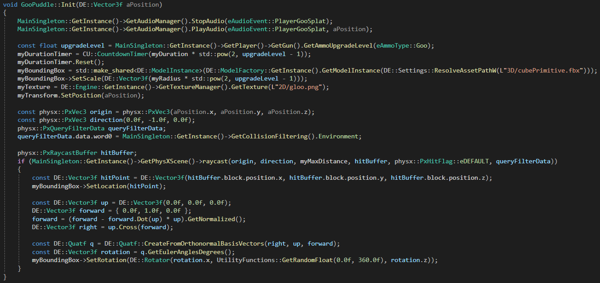

Multi-Purpose Gun Utilizing PhysX

Introduction & Summary
For our 7th game project at The Game Assembly, we were tasked with creating a first-person perspective game. We decided to use Titanfall 2 as our reference game, specifically the Frontier Defense game mode, a wave-shooter. For this, I wanted to design and develop a core mechanic of the game, and so I chose to do the weapon.
The gun was inspired by the way Nintendo designs games — choosing one mechanic and making multiple ways for it to be used, creating a game experience around it. I would’ve loved to do something like the watergun from Super Mario Sunshine or the ink gun from Splatoon, but graphics programming isn’t my strong suit and I wasn’t sure how to incorporate such a weapon into our desired genre.
And so I decided to make the one gun to rule them all, consisting of three different ammo types, each with their own use-case. Originally, I wanted the ammo types to be usable in multiple ways, but due to having very little time for designing and brainstorming, as well as little time overall, some mechanics were scrapped and others were never thought of. I am pleased with the result in terms of each type having their own identity and use-case, but only one type ended up having multiple gameplay-impacting effects.
This was also the first time I ever attempted using PhysX, and I felt it would be a good learning experience, so each ammo type uses PhysX in their own way.
All ammo types have two upgrade tiers, each designed to feel relevant and fun whilst still keeping a low scope, seeing as we’re always working with very tight deadlines.
Beam Ammo

The first ammo type designed was the Beam. A precise, medium to long range type dealing low but continuous damage without ammo-count restrictions. The idea was that this would be the only ammo type unlocked at the start of the game, however, due to a time-restricted game loop (10 minutes), we decided to unlock the first level of each ammo type, so that the player got to experience them.
The base level of the Beam ammo shoots one raycast from the camera’s location in the direction of the camera’s forward. To visualise it, I render a cylinder model that stretches from the tip of the gun’s muzzle to the first point the ray hits. If nothing is hit within the Beam’s max range, the cylinder model is simply set to the length of the max range.
Upgrade Effect
Upgrading the Beam makes it wider and increases its max range. The former is achieved by doing four additional raycasts, originating slightly to the left, right, above and below the original raycast, creating a wider hit area. The visual cylinder model is simply scaled up to match the width.


Potential Improvements
Overheat
I believe that raising the Beam’s damage and giving it the drawback effect of overheating after x seconds of use, leaving it unusable for x seconds, would’ve added a fun additional level of player agency.
Wider
Though the upgrade tiers made the Beam wider, I felt that the impact wasn’t as big as I would’ve liked. I was restricted visually by the width of the gun model, so it unfortunately couldn’t be made any wider.
Set puddles aflame
A wish-feature from the get-go was the ability to set the pools spawned by the third ammo type, Goo, on fire, thus creating damage over time areas on the floor.
Refactor code
While I do always try to keep things neat and tidy in my code, we also work with the mindset of “make it work”, i.e. make the feature work asap. A mixture of these things caused the code to become relatively messy by the end. An example of a specific thing I would’ve liked to change is the way the Beam handles its raycasting with increased upgrade levels. It’s not only a lot of code, I would’ve also liked to set the Beam’s hit point to only the first thing hit.
Rocket Ammo
 The second ammo type designed was the Rocket. It is harder to hit, long range, dealing big damage in an area around its impact. It’s slow to fire and to reload with a relatively small magazine size, similar to a classic rocket launcher.
The second ammo type designed was the Rocket. It is harder to hit, long range, dealing big damage in an area around its impact. It’s slow to fire and to reload with a relatively small magazine size, similar to a classic rocket launcher.
The Rockets pull from a projectile pool that consists of RocketObjects, each holding a PhysX rigidbody but the Rocket is unaffected by gravitational pull and travels in a straight line.
This is the only ammo type that I managed to squeeze in a secondary gameplay mechanic into, the rocket jump, something I am very happy with. Originally, this jump dealt a fair bit of damage to the player in order to encourage the several movement options provided by our wonderful player controller (made by Thea Nilsson). However, after playtest feedback we decided to drastically decrease the damage taken. The damage taken is also based on the player’s proximity to the impact location.
 Rocket jump showcase
Rocket jump showcase
Upgrade Effect
Upgrading the Rocket ammo increases its travel speed, the radius of its explosion, the magazine size, and the size of its model. Mainly, I wanted bigger explosions to emphasize on its ability to deal with large quantities of enemies.

Potential Improvements
I am happy with the Rocket ammo type overall, it would only be small tweaks such as cleaning up the code or adding pointlights to the projectiles in order to increase their visibility. I also would've liked to scale up the explosion VFX to match the size of the explosion, but we ran out of production time.
Goo Ammo

 The third and final ammo type designed was the Goo. This was somewhat hastily designed toward the end of our pre-production phase and it’s unfortunately pretty easy to tell. The Goo ammo type fires projectiles that bounce on impact with walls and spawn slowing “Goo Puddles” when they eventually hit the floor.
The third and final ammo type designed was the Goo. This was somewhat hastily designed toward the end of our pre-production phase and it’s unfortunately pretty easy to tell. The Goo ammo type fires projectiles that bounce on impact with walls and spawn slowing “Goo Puddles” when they eventually hit the floor.
The Goo projectiles pull from a projectile pool that consists of GooObjects, each holding a PhysX rigidbody that is affected by gravity, causing them to travel in an arc.
Goo Puddles
Upon impact with a near-enough horizontal surface, the GooObjects are destroyed and instead spawn a GooPuddle object. These in turn spawn a decal on the impact location, visualising an area that slows enemies within it. The puddles have a duration after which they disappear.

Upgrade Effect
Upgrading the Goo ammo increases the size and duration of its Goo Puddles, as well as the size of the projectile’s model. These felt like natural upgrade effects, but also felt somewhat shallow.

Potential Improvements
I don’t feel that the Goo ammo type became as useful as it could’ve been, it certainly could have used some more love in the design phase. Primarily, I would’ve loved to give its Goo Puddles the ability to be set ablaze by the Beam ammo type, creating an area that dealt damage over time and also creating cross-ammo type mechanics.